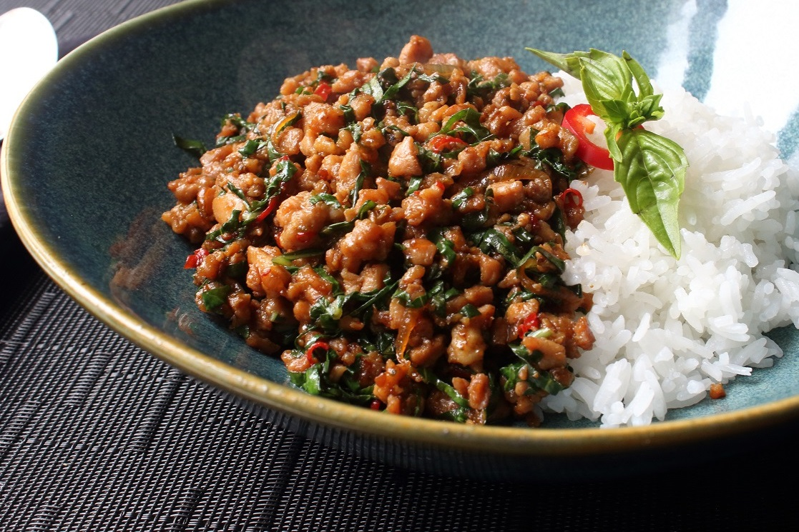

Krapow

Description
Krapow is popular Thai dish with spicy stir-fry with holy basil.
Ingrediants
- Sauce
- Chicken broth
- oyster sauce
- fish sauce
- white sugar
- dark soy sauce
- Meat
- Garlic
- Hot chile peppers
- Holy basil
Steps
- Heat your wok on high heat, and add about 1 tablespoon of oil to the pan.
- When the oil is hot, add the chilies and garlic. Stir fry them for about 20 seconds or so until they get really fragrant, but don't let them burn or get too dry.
- Toss in your chicken. Keep stir frying continuously. At this stage you want to continue to stir and cook your chicken until it's just about fully cooked all the way through (depending on the size pieces of chicken and how hot your fire is, it should take about 2 - 3 minutes). If it starts to get dry, add just a tiny splash of water.
- Add 1 teaspoon of oyster sauce, ½ teaspoon fish sauce, ½ teaspoon sugar, and finally a splash of dark soy sauce. Keep stir frying for about another 30 seconds.
- Grab a handful of holy basil, toss it into the pan, fold it into the chicken, and then immediately turn off the heat (if you're using an electric stove, you'll want to remove the pan from the burner). The holy basil really only needs to cook for about 5 seconds, and it will continue to wilt and cook from the existing heat of the chicken. This step is important because if you cook the basil for too long, it loses some of its glorious flavor and gets slightly chewy